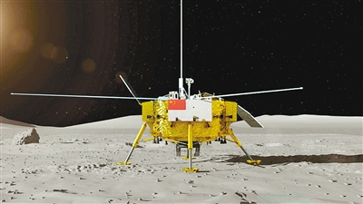

Held at Tiananmen Square in Beijing on October 1, 1949
In the founding ceremony, Mao Zedong announced on the Tiananmen Gate
The Central People’s Government of the People’s Republic of China
People's Republic of China establishment
The three major transformations have been completed, and the transition from new democracy to socialism has been achieved. The land reform has achieved remarkable results, centering on the realization of socialist industrialization. According to the party’s general line and overall tasks during the transition period, China’s development from 1953 to 1957 was formulated. National economic plan

In September 1954, the first plenary meeting of the First People's Congress formulated the first social master of our country on the basis of the "Common Program".Right type constitution
In December 1978, the party convened the Third Plenary Session of the Eleventh Central Committee. It is a great turning point in the history of our party.
The essence of reform and opening up is: liberate and develop social productive forces, improve overall national strength, further liberate people's ideology, and build socialism with Chinese characteristics.
In 1972, President Nixon’s visit to China marked the end of the isolation between China and the United States since the founding of New China.
In the late 1970s, Comrade Deng Xiaoping took a long-term view and seized the opportunity to promote the establishment of formal diplomatic relations between China and the United States on January 1, 1979, thus ending the 30-year-old abnormal state.
The 14th National Congress of the Communist Party of China clarified that the goal of China's economic system reform is to establish a socialist market economic system; to establish Deng Xiaoping's guiding role in building a socialist theory with Chinese characteristics in the whole party.
The early morning of July 1, 1997,
the Chinese and British governments,
the Hong Kong regime
The handover ceremony was held in Hong Kong, announcing the Chinese government's resumption of sovereignty over Hong Kong. The establishment of the Hong Kong Special Administrative Region of the People's Republic of China
On December 20, 1999, the Chinese and Portuguese governments held a handover ceremony of the Macao regime, announcing the Chinese government's resumption of sovereignty over Macao and the establishment of the Macao Special Administrative Region of the People's Republic of China.
The gross domestic product exceeded US$1 trillion for the first time. In 2001, China officially became a member of the WTO.
On July 13, 2001, the President of the International Olympic Committee, Mr. Samaranch, announced in Moscow that Beijing will become the host city of the 2008 Olympic Games.
Beijing successfully hosted the 29th Olympic Games and the 13th Paralympic Games
The 2010 World Expo in Shanghai, China, is also the first ever World Expo to be held in China. The theme of the Shanghai World Expo is “Better City, Better Life”. The organizer is expected to attract 70 million visitors from all over the world, with a total investment of 45 billion yuan, exceeding the Beijing Olympics, which is the largest in the history of the World Expo.
From January 16th to 18th, 2013, the Boao Forum for Asia 2013 SME Development Forum was held at the BFA Hotel in Boao, Hainan with the theme of “Strive, Innovate and Transcend: The Status Quo and Future Development of SMEs”.
“Belt and Road” is the abbreviation of “Silk Road Economic Belt” and “21st Century Maritime Silk Road”. In September and October 2013, Chinese President Xi Jinping proposed to build “New Silk Road Economic Belt”
The successful launch of the 01A domestic aircraft carrier, China is over
Without the history of a domestic aircraft carrier, the dream of a century-old aircraft carrier has finally been realized.
The 001A aircraft carrier is China's first self-designed, self-constructed,
The aircraft carrier using independent research and development equipment is currently only China, the United States and Britain.
At 14:00 on May 5th, China’s first international mainstream trunk aircraft C919,
First flight at Shanghai Pudong International Airport.
For this moment, the Chinese have been waiting for half a century!

2018 is the 40th anniversary of China's reform and opening up. With the unprecedented depth and breadth of the Party Central Committee with Comrade Xi Jinping as its core, the country's governance system and the modernization of governance capabilities, which are far-sighted, deepened, and deeply reconstructed, will be reformed. The great cause of characteristic socialism is pushed to a new realm.
"change4" launch, will achieve the first soft landing on the back of the moon


Do not forget the initial heart, keep in mind the mission, and strive to achieve the goal of "two hundred years"!